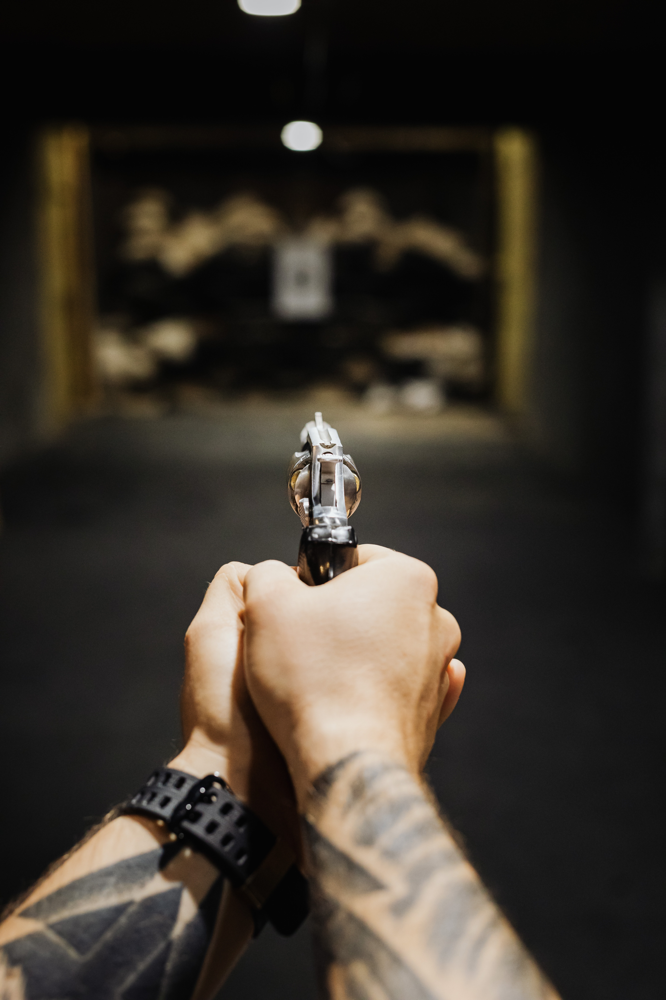

News
School Shooter Drills: Is There a Right Way to Do Them?
The mass shooting in Uvalde, Texas, has added new fuel to long-running conversations about drills schools use to prepare for shootings: how to help students develop routines they can rely on in case of crisis without traumatizing them>
The May 24 attack—in which an 18-year-old gunman killed 19 elementary school students and two teachers—sparked a new round of debates over school safety, and how regularly students should prepare for the devastating but statistically unlikely event of a mass shooting at their school. 
On one side: advocates for “hardening schools” have pushed for exercises that teach students how to jump out of classroom windows and even fight back by throwing objects like erasers and books at an attacker. In recent years, some school districts have even added elements to their drills intended to make them seem more like a real attack: the sound of real gunfire, officers firing blanks through school hallways, and the use of prop or toy firearms.